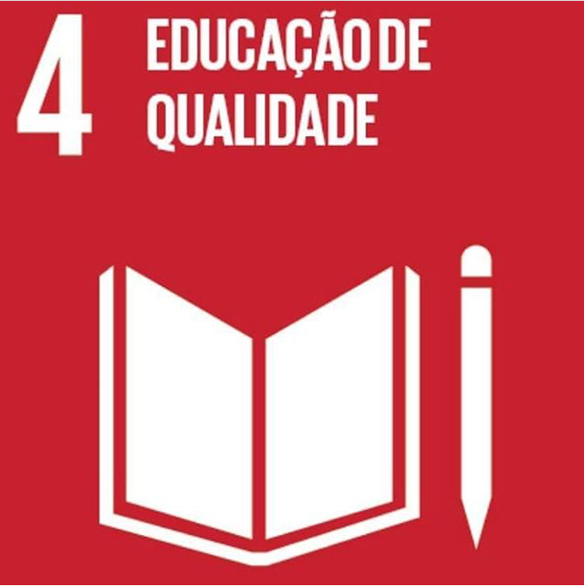

Nossa Equipe
Conheça os integrantes responsáveis pela criação e desenvolvimento da solução:
Cuida de fazer a equipe funcionar e responde pela equipe.
Supervisiona a equipe e projetos, vê se está em ordem pro gerente aprovar.
Dá as ideias de como poderá ser o produto.
Pega a ideia do diretor criativo e bota em prática.
Pega a ideia do diretor criativo e bota em prática.
Sobre a Elo Tech
Nós somos a Elo Tech, uma empresa com o foco em tecnologia e um objetivo, facilitar sua vida como nosso slogan "um caminho mais fácil pra vc", nós alcançamos isso com uso da tecnologia fazendo diversos produtos pra diferentes tipos de públicos. Nesse projeto nosso objetivo é facilitar e automatizar a verificação de informação, para evitar desinformação e outros problemas que falaremos.
Para mais informações clique em "O Problema" (no menu ao lado) e saiba mais.
O Problema
Grandes veículos de comunicação, telejornais e portais de notícia — como o SBT, CNN, Jornal Nacional entre outros — enfrentam constantemente o uso indevido de suas marcas em golpes e desinformação.
Criminosos utilizam trechos de reportagens, fotos e deepfakes para simular notícias falsas, gerando pânico na população e aplicando fraudes financeiras.
Nosso Produto: Projeto Aletheia
Para combater o avanço da desinformação de forma prática e imediata, desenvolvemos o Projeto Aletheia — um ecossistema de Inteligência Artificial focado na análise, validação e checagem de conteúdos em tempo real.
O Projeto Aletheia analisa textos, manchetes e matérias suspeitas utilizando algoritmos avançados para identificar padrões de linguagem enganosa, inconsistências contextuais, sensacionalismo e indícios de manipulação ou deepfakes. Ao cruzar informações com dados confiáveis e checados, o sistema gera um diagnóstico rápido e preciso sobre a veracidade do conteúdo.
Mais do que uma ideia teórica, o Aletheia é uma solução prática pronta para atuar como um escudo digital, permitindo validar informações antes que fake news e golpes se espalhem e causem danos.
Quer ver a BETA do Projeto Aletheia? Clique aqui e teste!
Principais Benefícios
Confira as vantagens práticas que o Projeto Aletheia oferece para os veículos de comunicação e para a sociedade:
Impede que a imagem e a credibilidade de grandes veículos de imprensa sejam usadas em fraudes e golpes virtuais.
Detecta e analisa conteúdos suspeitos com agilidade, cortando o alcance da desinformação antes que ela viralize.
Protege idosos e pessoas com menor letramento digital contra golpes financeiros e notícias falsas perigosas.
Oferece uma ferramenta simples e funcional para ser integrada diretamente à rotina de checagem dos jornalistas.
Além disso, alinhamos nossa solução às ODS 4, 10 e 16 para gerar um impacto positivo e ético na sociedade.
ODS 16: Paz, Justiça e Instituições Eficazes

Criminosos utilizam ferramentas avançadas para manipular a opinião pública e aplicar golpes digitais.
Nossa tecnologia atua diretamente no combate ao crime cibernético, impedindo que conteúdos fraudulentos extrapolem limites e garantindo a integridade da informação legítima.
ODS 4: Educação de Qualidade

A educação vai muito além da sala de aula: ela abrange o letramento midiático e o acesso diário à verdade.
Ao filtrar manipulações, garantimos que a sociedade permaneça bem informada e consciente diante do ecossistema digital.
ODS 10: Redução das Desigualdades

Grandes portais e telejornais possuem um público diversificado, incluindo idosos e pessoas com menor letramento digital que são mais vulneráveis a golpes e desinformação.
Nossa solução protege essa parcela da população, democratizando o acesso a checagens de fatos seguras e simplificadas.
Obrigado pela visita.
Elo Tech — Conectando tecnologia, verdade e segurança.